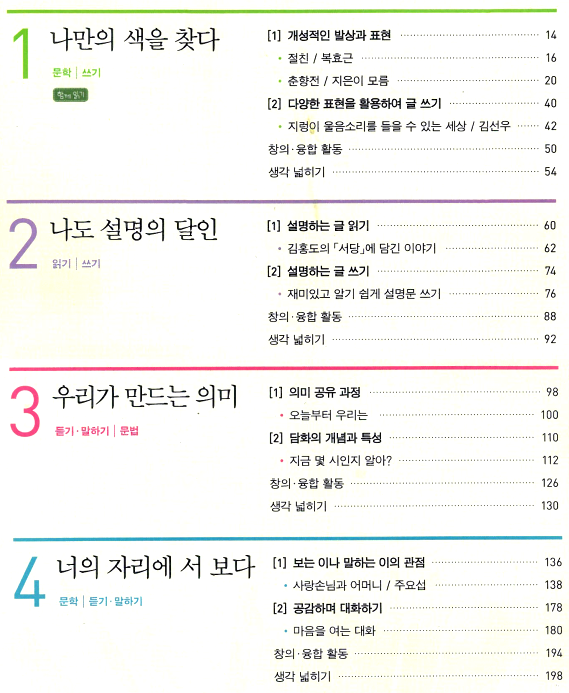
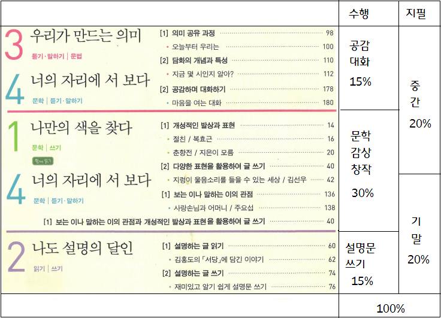
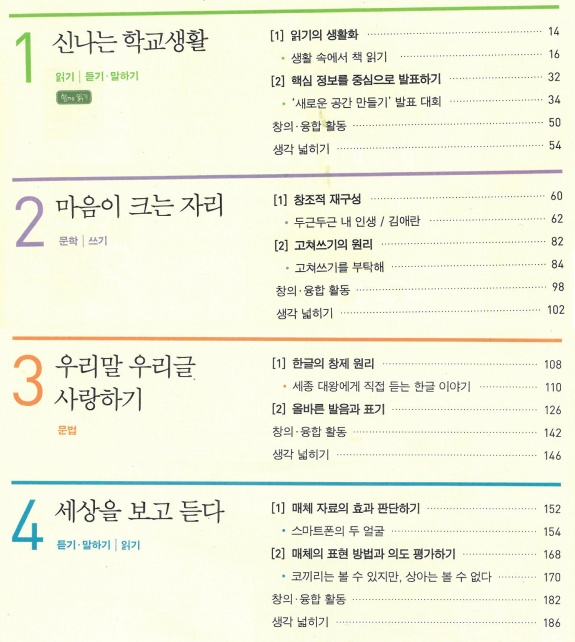

2020년도 수업 짜는 이야기
창비 중학교 2학년 1학기, 2학기의 경우
중학교 2학년 1학기 창비 교과서입니다.
- 1단원: 문학 감상, 문학 창작
- 2단원: 설명문 읽기, 설명문 쓰기
- 3단원: 담화
- 4단원: 화자, 시점, 공감 대화
딱 보는 순간, 수행평가는 1) 문학 창작, 2) 설명문 쓰기, 2) 공감 대화 가 떠오릅니다. 한 학기 한 권 읽기는 1) 문학 창작 에 함께 포함시키면 될 것 같습니다. 문학 창작은 시, 소설을 수행평가 해서 연말에 문집을 만들어야겠습니다. 발간 비용을 확보할 준비를 합니다. 서부교육지원청에서 책이바구, 글이바구 동아리를 3월까지 모집한다니 신청서를 써야겠습니다.
그리고 4단원의 화자, 시점은 어차피 ‘문학 감상’에 필요하니까 1, 4단원은 묶어서 한 번에 가기로 합니다. 그러면 1학기 문학 수업은, ‘절친’, ‘춘향전’, ‘지렁이 울음소리’, ‘사랑손님과’ 4편을 가지고 ‘화자, 시점, 표현’을 공부하면 되겠습니다.
3단원의 담화는 4단원의 ‘공감 대화’ 할 때 이론적 바탕이 되니까 한 번에 묶어서 가기로 합니다. 일단 이번 학년이 저랑 수업하는 게 처음이므로, 수업 시간에 서로 듣는 분위기를 만들기 위해 ‘대화’ 단원을 가장 먼저 수업하기로 합니다. 3월 첫째 시간에 “국어 교과란 무엇인가?”를 하고, 둘째 시간에 “국어 수업은 어떻게 듣는가?”를 할 때, 다음과 같은 표를 알려 줍니다.
| 듣기 | 말하기 | |
| 공식적인 말 | A | B |
| 비공식적인말 | C | D |
A, B, C, D 의 요령을 알려주고, 그 중 C, D 는 수행평가에 반영한다고 알려줍니다. 그리고셋째 시간부터 바로 공감 대화 수업이 시작됩니다.
이제 2단원 설명문만 남았네요. 1) 비문학 글쓰기의 인지적 순서 2) 설명문의 개요 3) 설명문의 전개방식 을 가르쳐야겠다는 생각이 듭니다. 배화여중 강경일 선생님이 ‘설명문 쓰기’를 문집으로 엮은 걸 올해 보내주었습니다. 우리 학교도 올해 “상대적이며 절대적인 감천의 백과사전”을 만들어 보고 싶습니다. 학교에 문집 발간 비용이 나올 구멍이 없는지 더 찾아봐야겠습니다. 잘 되면 연말에 ‘문학 문집’ 1권과 ‘비문학 문집’ 1권이 나올 것 같습니다.
이제 순서를 짜야 합니다. 꾸준한 실천이 필요한 [1] 공감 대화가 가장 먼저겠지요. 설명문을 먼저 할까, 생각해 보았으나, 5월에 어버이날, 스승의날이 끼어 있습니다. 시집을 뒤져가며 어버이와 선생님에게 ‘시 편지 쓰기’ 활동을 하고 싶네요. 그러려면 문학을 먼저 해야겠지요. [2] 문학의 화자, 시점, 표현 방법이 두번째가 됩니다. 그리고 [3] 설명문의 전개 방식을 열심히 하다보면 여름 방학이 오겠네요. [2] 문학의 화자, 시점, 표현 방법은 작품을 바꿔서 자꾸 문제를 만들 수 있으므로 중간 고사에도 반영하고, 기말 고사에도 반영합니다.
이제 세부계획을 짜야 하는데요, 일단 다음과 같이 정리하고 구체적인 루브릭은 하루 쉬었다가 짭니다.
[1] 공감 대화가. 듣기 3단계를 실천하고 기록해 오기나. 말하기 3단계를 실천하고 기록해 오기 다. 수업 중에 듣기, 말하기 3단계를 실천하면 가산점을 주기 라. 수업 중에 듣기, 말하기 3단계에 어긋난 발언을 하면 감점하기 [2] 문학 감상, 창작가. 한 학기 한 권 읽기: 시집 읽고 운율, 역설, 반어, 풍자를 찾아 분석하는 글 쓰기나. 운율, 역설, 반어, 풍자, 기타 표현 방법을 살려 시 쓰기 나. 화자, 시점의 효과를 드러내고 역설, 반어, 풍자, 기타 표현 방법을 살려 소설 쓰기 라. (3분 글쓰기 공책을 사야겠습니다.) [3] 설명문 쓰기가. 가장 잘 아는 것을 골라 개요를 짜고 설명문을 쓰기나. 정의, 예시, 상술, 부연, 인과, 비교, 대조, 분류, 분석, 서사, 묘사 등을 활용하기 |
* 교육계획서에는 1년치 평가 계획이 들어가야 하므로 2학기 교과서를 보면서 2학기 평가 계획도 일단 수립해 둬야 합니다.
창비 중학교 2학년 2학기 교과서는 다음과 같습니다.
- 1단원: 읽기의 생활화, 발표
- 2단원: 창조적 재구성, 고쳐쓰기
- 3단원: 한글 창제 원리, 어문 규범
- 4단원: 메체 활용
와, 할 게 엄청 많습니다. 두근두근 피가 끓네요.
딱 보니까 1) 읽기의 생활화, 2) 발표, 3) 고쳐쓰기, 4) 어문 규범을 수행평가로 해야겠다는 생각이 듭니다. 특히 1단원은 ‘학교 공간’에 관한 발표입니다. 음, 이걸 학생들이랑 잘 짜서 “학교 공간 혁신 예산”을 신청해볼까.. 하는 생각이 듭니다.
일단 1) 읽기의 생활화를 위해서 독서 일지 공책을 1학생 당 1권씩 사야겠습니다. 수업 시작 10분 독서를 하고 그 중 하나를 골라 서평 쓰기를 하면 독서 수행 평가가 될 거 같습니다. (독서읽지는 연말에 생활기록부 독서세특 기록의 근거가 됩니다.) 앗, 2단원에 창조적 재구성이 있네요. 1-1) 책 소개 영상(북트레일러)을 만들어도 되고 1-2) 책 내용을 영화로 찍어도 되겠네요. 근데 ‘고쳐쓰기’, ‘어문 규범’, ‘훈민정음’, ‘발표 수업’을 다 하려면 시간이 모자라겠네요.
갑자기 2단원이 결론이 나버렸습니다. ‘창조적 재구성’은 기말고사 마치고 연말에 겨울방학직전까지 재밌게 찍고 논다.
2) 발표 수업에서 중요한 것은 ㄱ) 발표의 내용 ㄴ) 발표 듣기 입니다. 공간 혁신을 발표하면, 4단원의 매체 활용도 함께 할 수 있어서 좋을 거 같지만, ㄴ) 발표 듣기 능력을 확인하기가 쉽지 않습니다. 그리고 2학기는 짧습니다. 고민 끝에 ‘공간 혁신’은 다른 교과에 부탁하기로 하고, ㄱ) 발표의 내용을 바꿉니다.
3단원이 한글 창제 원리와 어문 규범이라는 엄청난 지식 단원입니다. 2) 발표 수행평가를 하기에 딱 좋습니다. 발표 주제를 ‘한글 창제 원리’, ‘한글의 우수성’, ‘표준 발음법’, ‘자주 틀리는 맞춤법’, ‘외래어 표기법’, ‘로마자 표기법’, ‘띄어쓰기’ 등으로 나눠 주고 발표를 시키면 됩니다. 이왕이면 ‘매체’도 활용하라고 시킵니다. 채점 방법은 A) 발표 능력 50점 B) 발표 듣고 쪽지 시험친 점수 25점 C) 발표 들은 애들의 쪽지 시험 평균 점수가 높으면 발표자 점수를 올려주고 그 애들 점수가 낮으면 발표자 점수를 감점합니다. A) 는 발표하는 능력=1학기에 배웠던 공식적 말하기, B) 는 발표 듣는 능력=1학기에 배웠던 공식적 말 듣기, C) 는 발표를 잘 듣도록 발표하는 능력을 측정합니다. 발표는 ‘발표했다’로 끝나는 것이 아니라 청중이 내 발표를 ‘잘 듣도록’ 해야 하기 때문입니다. 그리고 ‘한글 창제 원리’, ‘한글의 우수성’, ‘표준 발음법’, ‘자주 틀리는 맞춤법’, ‘외래어 표기법’, ‘로마자 표기법’, ‘띄어쓰기’ 시험은 학생들이 ‘발표한 내용’에서 시험문제를 내겠다고 공지합니다.
2단원의 ‘고쳐쓰기’할 때는 1학기 때 썼던 시, 소설, 설명문을 다 꺼내옵니다. ㄱ) 문단 수준 ㄴ) 문장 수준 은 교사가 가르쳐줘서 먼저 고치고, 그 작업이 끝나면 ㄷ) 단어 수준 의 고쳐쓰기를 서로 해 보게 합니다. 이걸로 3단원의 ‘어문 규범’과 2단원의 ‘고쳐 쓰기’를 한 방에 해결합니다.
4단원 매체 활용은 ‘매체 비평’으로 접근해서 교사 중심으로 재미있게 알려 주면 기말고사가 시작될 겁니다.
1학기말에 설명문을 열심히 썼기 때문에 2학기 시작과 동시에 ‘고쳐쓰기’로 분위기를 이어가고 싶지만, ‘발표’를 준비하는 시간을 줘야 하기 때문에 그렇게는 안 됩니다.
[1] 읽기의 생활화: 독서일지를 주고 10분 독서를 해야 하므로 이걸 제일 먼저 합니다.[2] 발표하기: 한글 창제 원리와 어문 규범에 대한 발표 준비할 시간을 주기 위해 이걸 다음으로 합니다.[3] 발표가 완료되면 ‘고쳐쓰기’를 합니다.(중간고사가 끝나면 10분 독서한 책으로 서평을 쓰고 10분 독서 대신 10분 받아쓰기를 기말까지 합니다.)[4] 매체 비평 수업을 합니다.[5] 기말이 끝나면 방학 때까지 창조적 재구성을 합니다. 12월 학예제에 올리거나, 2월에 상영회를 하면 좋습니다. |
아직 2학기 세부계획 루브릭을 안 짭니다. 귀찮거든요.